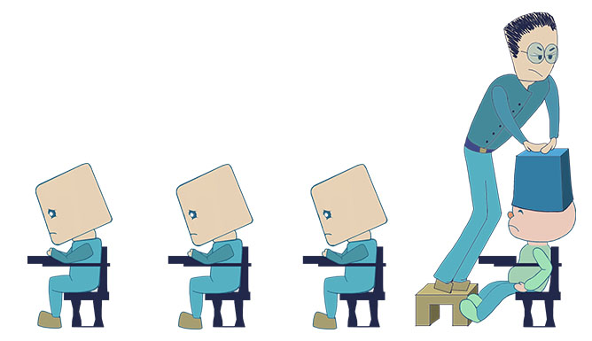
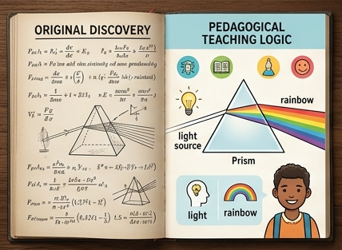
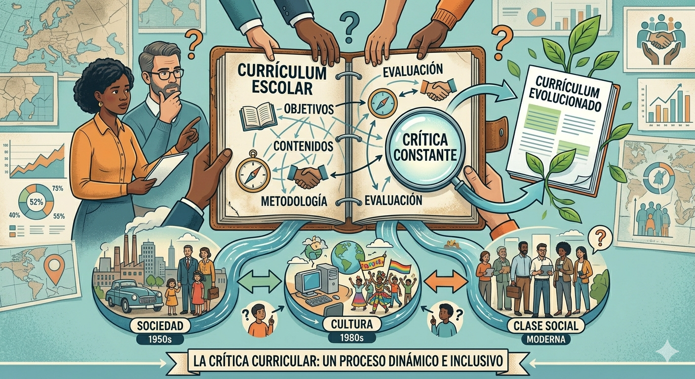
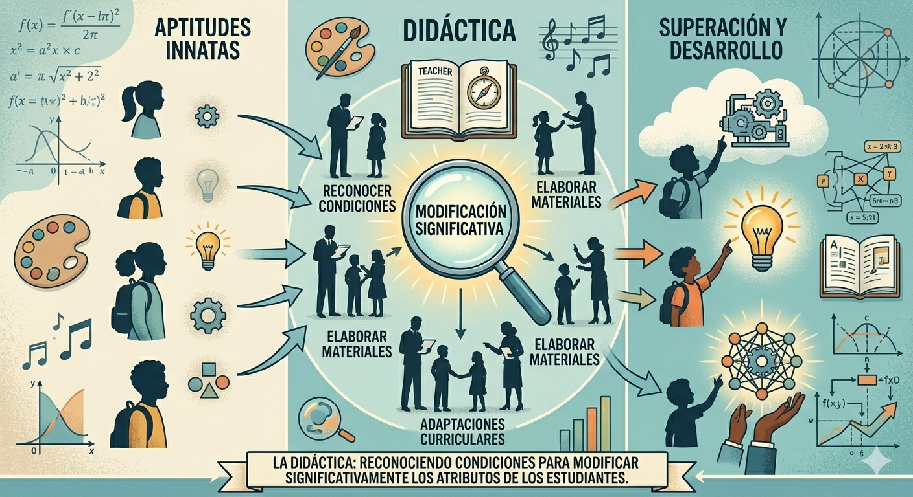
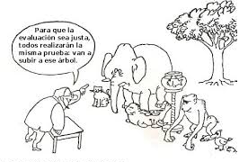

No todas las formas de influencia sobre las personas son legitimas, es necesario considerar la correspondencia entre la formacion y la libertad del sujeto, mas alla de una “ideologia de la eficacia”.
Historicamente se ha enseñado de multiples formas con valores distintos. Si todas las modalidades fueran igualmente eficaces, la didactica seria innecesaria.

La enseñanza no debe limitarse a transmitir los conocimientos con la misma logica con la que se descubrieron en sus disciplinas de origen.

Los curriculos deben someterse a una critica constante, ya que cambian segun la sociedad, la cultura y la clase social.
Aunque la educacion se ha democratizado, los aprendizajes no son iguales para todos; la didactica es necesaria para lograr que todos desarrollen habilidades de orden superior y no solo algunos.

La enseñanza no esta coartada por las aptitudes innatas, la didactica busca reconocer y modificar significativamente los atributos de los estudiantes.

Evaluar no se reduce a aplicar reglamentaciones o escalas de calificacion; es un proceso complejo, variable e imprevisto que la didactica debe estudiar.
Enseñar no es un talento natural ni una tarea facil; requiere la construccion de conocimientos especificos para poder enseñar mejor.